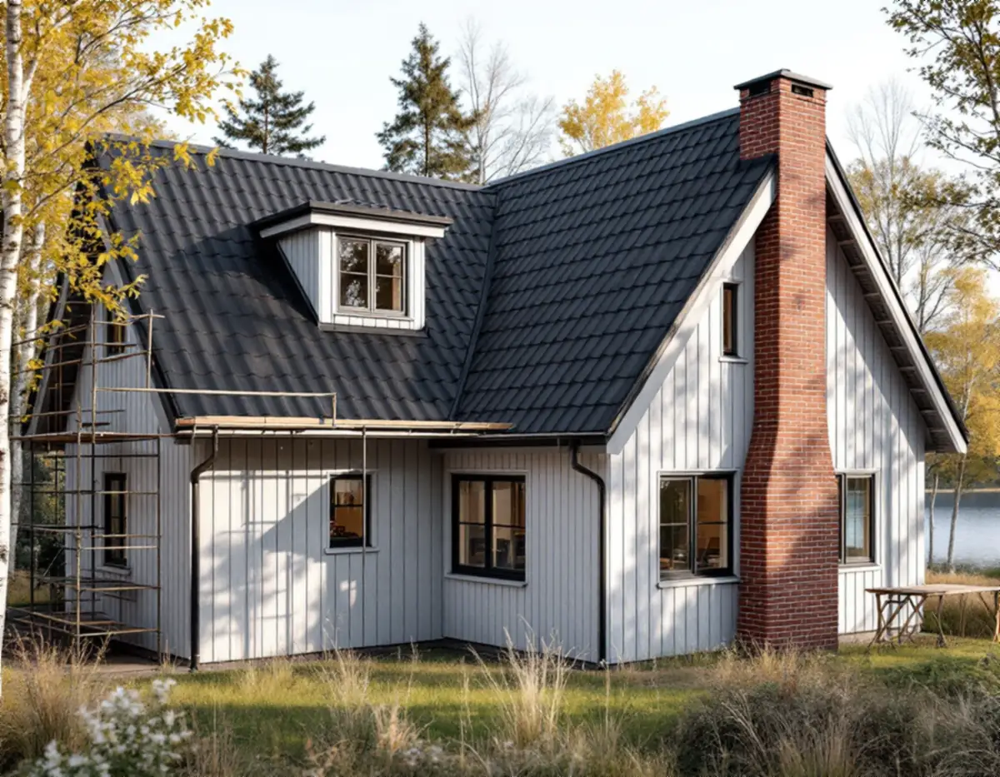
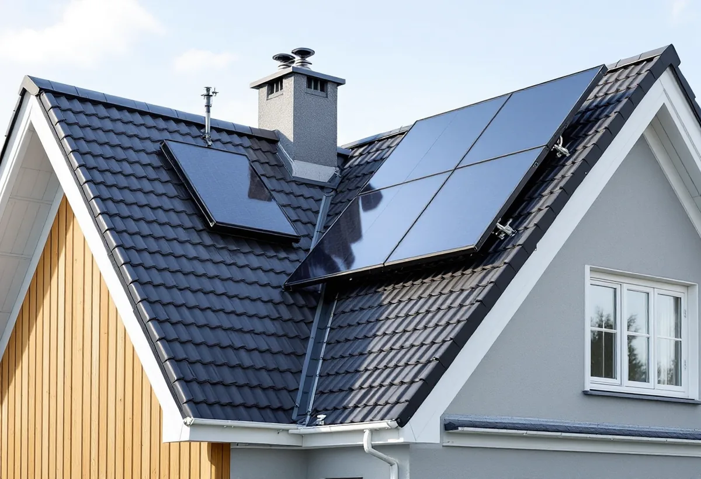
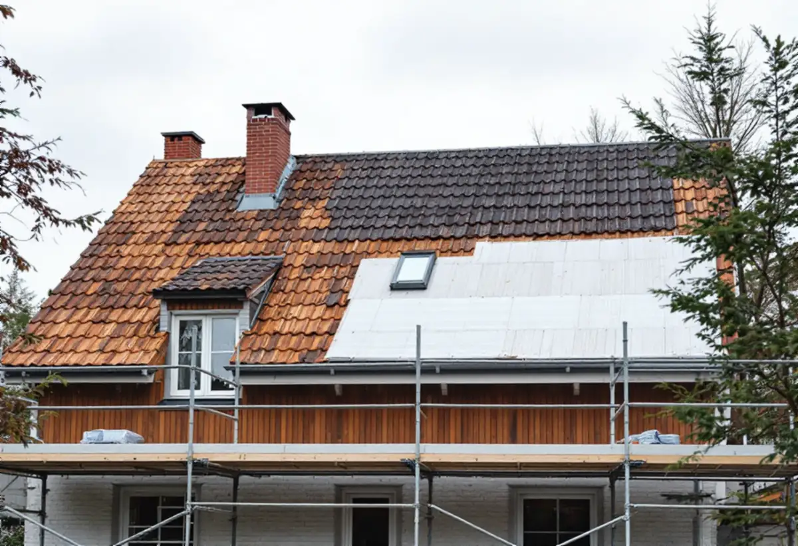

Platsbesök
Tak, takstolar, skorsten och önskemål om solceller går vi igenom på plats.

Ska taket ändå läggas om är det rätt tillfälle att bestämma vad som ska sitta på det de kommande decennierna: solceller, en ny skorsten eller ett annat material.
Skicka gärna en bild på taket.
Något blev fel. Kontrollera uppgifterna eller ring 08 12 410 276.
Pris: från 1 400 kr/m² inkl. material, före ROT-avdrag
Vi tittar på jobbet på plats innan du får offert.
Du ser vad som ingår och vad det kostar.
Vi drar av ROT direkt och sköter ansökan.
Geal Entreprenad AB, Bromma. Org.nr 559303-7566.

På Ekerö beror svaret på var huset ligger. Geal Entreprenad AB byter tak på villor och fritidshus på Mälaröarna och reder ut reglerna innan materialet beställs.
Att byta taktäckningsmaterial räknas som en fasadändring i plan- och bygglagen. På ett en- eller tvåbostadshus kräver det normalt inget bygglov. Men inom särskilt värdefulla områden och på särskilt värdefulla byggnader gäller utökad lovplikt, och då kan ett nytt takmaterial kräva bygglov.
När lagen ändrades gjorde Ekerö kommun en ny bedömning av sina särskilt värdefulla byggnader och områden. Kartan över dem finns i Ekerökartan tillsammans med totalförsvarets riksintressen, och kommunen ber dig börja med att kontrollera om din fastighet berörs. Vi kontrollerar kartan och detaljplanen vid platsbesöket, innan något material väljs.

Ekerö kommun skriver att solenergi kan vara bra att planera för när du ska lägga om taket, och att solceller på taket vanligtvis inte kräver bygglov. Undantagen är när detaljplanen kräver lov för solpaneler, när fastigheten ligger inom detaljplan och inom område för totalförsvarets riksintressen och när åtgärden sker på särskilt värdefulla byggnader eller i särskilt värdefulla områden.
På Lovö är det särskilt. Vid bygglovsärenden inom detaljplan och områdesbestämmelser där remitteras Försvarsmakten, som enligt kommunen ofta är negativ till solceller, och då kan bygglov inte beviljas. En ansökan om bygglov för solceller ska innehålla situationsplan, fasadritningar med mått på solcellerna, produktblad och kontrollplan. Påverkar anläggningen väsentligt den bärande konstruktionen eller brandskyddet krävs en bygganmälan.
Ska en ny skorsten upp genom det nya taket behövs inget bygglov, skriver kommunen. Vill du i stället dra en rökkanal längs fasaden kan det krävas bygglov för fasadändring. Installation eller större ändring av en eldstad, braskamin, öppen spis eller kakelugn ska anmälas, och det gäller också om du sätter in en spisinsats i en befintlig öppen spis eller byter bränsle i husets huvudsakliga värmekälla.
Anmälan ska innehålla en planritning med eldstaden markerad, en fasadritning med skorstenen eller rökkanalen inritad, en kontrollplan och produktbeskrivning med typgodkännande eller CE-märkning. När installationen är klar skickar du in sotarintyg, den ifyllda kontrollplanen och en ansökan om slutbesked, och eldstaden får inte användas innan slutbeskedet har kommit. Vi plåtar in skorstenen tätt mot det nya taket och samordnar arbetet så att genomföringen är klar när sotaren kommer.
Även när varken lov eller anmälan krävs måste solceller uppfylla kraven i plan- och bygglagen, plan- och byggförordningen, Boverkets byggregler och Boverkets konstruktionsregler, påpekar kommunen. Ett tyngre takmaterial eller ett fält med solpaneler ändrar lasten på takstolarna, och då bedöms bärförmågan innan något monteras.
Vi går igenom takstolar, råspont och läkt när det gamla taket är av och byter det som är skadat. Om husens tak och epoker på öarna kan du läsa under takrenovering på Ekerö, och om våra tjänster i stort under takläggare på Ekerö och takbyte.
Tak, takstolar, skorsten och önskemål om solceller går vi igenom på plats.
Ekerökartan och detaljplanen kontrolleras för fastigheten.
Rivning, underlag, ytskikt, plåt och genomföringar står var för sig.
Bygglov för solceller eller anmälan för eldstad när det behövs.
Gammalt tak rivs, underlaget ses över och nytt tak läggs.
Vi går igenom taket, plåten och genomföringarna med dig.
Skatteverket räknar byte och reparation av takpannor och hängrännor på ett småhus som rotarbete, liksom att byta plåttak och stuprör och att montera och montera ner byggnadsställningar. Rotavdrag ges för en bostad som du äger och bor i eller använder som fritidsbostad.
Avdraget är högst 30 procent av arbetskostnaden, högst 50 000 kronor per person och år och högst 75 000 kronor tillsammans med rutavdrag. Material och resor ger inget avdrag. Geal drar avdraget direkt på fakturan.
Takets yta och lutning, materialet, skorstenens skick, hur mycket underlag som behöver bytas, om solceller ska förberedas och hur material och ställning kan fraktas till tomten. En överblick finns i vad kostar ett takbyte. Efter ett gratis platsbesök får du ett skriftligt kostnadsförslag.
Byte av tegel-, betong- och plåttak.
Takbyte →Takbyte, takbesiktning och plåtarbeten.
Takläggare på Ekerö →Stenhamra, Kungshatt och Adelsö.
Takrenovering på Ekerö →Utanför plan, strandskydd och eget avlopp.
Attefallshus på Ekerö →Anmälan, mjukt vatten och eget avlopp.
Badrumsrenovering på Ekerö →Nytt hus, vattenskydd och bergvärme.
Byggföretag på Ekerö →Väder, säsong och torktider på öarna.
Fasadmålning på Ekerö →Egnahem, villaområden och äldre gårdar på Ekerö.
Fasadrenovering på Ekerö →Sommarvillor och 60-talsvillor på Ekerö.
Fönsterbyte på Ekerö →Erskines centrum och villorna.
Fönsterrenovering på Ekerö →Villor i Stenhamra och omgjorda sommarhus.
Golvläggare på Ekerö →Slipa trägolv som ligger på golvvärme.
Golvslipning på Ekerö →Vedspis, egen brunn och nya sopsorteringen.
Köksrenovering på Ekerö →Sommarvillor, stugor och villor på Mälaröarna.
Målare på Ekerö →Takvatten, solceller och plåttak på Ekerö.
Plåtslagare på Ekerö →Altan, gäststuga och snickeri nära Mälaren.
Snickare på Ekerö →Tapet på timmer, papp och skivor.
Tapetsering på Ekerö →Kartan, inglasningen och registret.
Tillbyggnad på Ekerö →Braskamin och större fönster.
Totalrenovering på Ekerö →Eller ring 08 12 410 276, mån–fre 08–17.
Skicka gärna en bild på taket.
Något blev fel. Kontrollera uppgifterna eller ring 08 12 410 276.